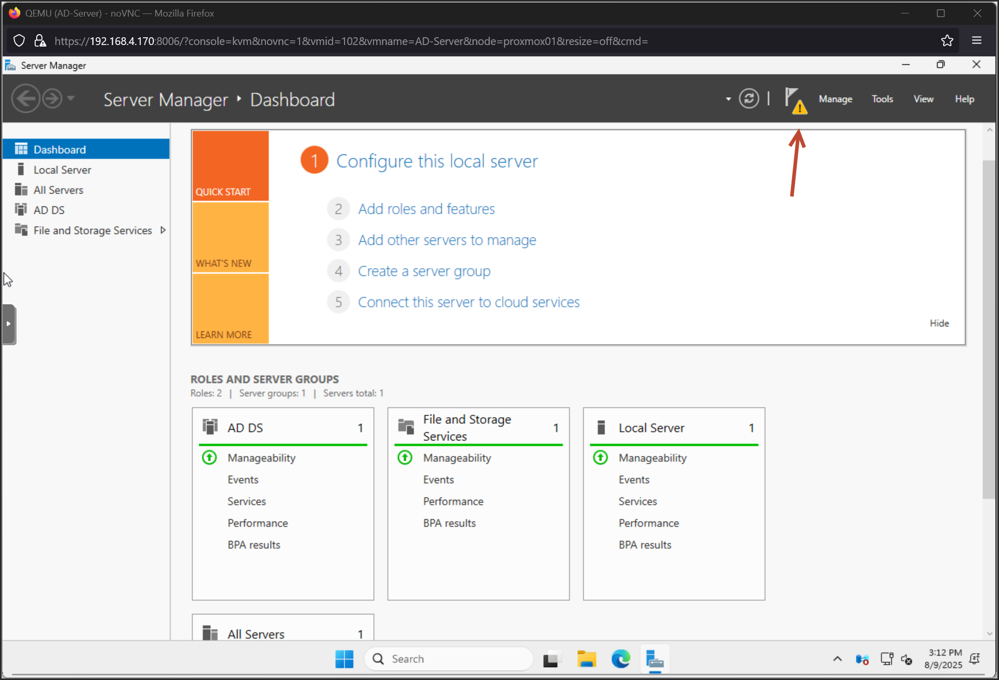
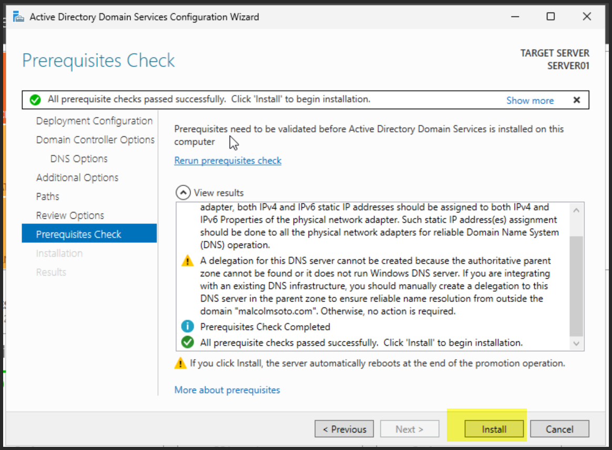

Windows Server 2025 install and AD DS role install.
Windows Server 2025 install and AD DS role install.
In this Post I will show you how I installed Server 2025 in my home lab and enabled the AD DS role.
To start get the windows server ISO from here:
https://www.microsoft.com/en-us/evalcenter/download-windows-server-2025
In my Lab I have a Proxmox server where I will make a new VM.
NoteWhen selecting a CPU in Proxmox avoid using the Host CPUThat’s because on Windows 11 and Windows Server 2025, Virtualization-Based Security (VBS) is enabled by default when installed on physical hardware.
If you virtualize it anduse asthe CPU type (assuming the CPU is a newer model), VBS is still enabled — but now you're dealing with nested virtualization, which negatively impacts performance.
By changing the CPU typeto,VBS inside the Windows VM gets disabled (since the required CPU instructions for VBS are missing), resulting in a performance boost at the cost of reduced security.
Now that the VM is created.Start the VM,andboot to the ISO.

PS Script to install AD Domain Services:
Install-WindowsFeature -Name AD-Domain-Services -IncludeManagementTools
Manual way is below



Now I have windows server 2025 installed and AD DS enabled and running.
Now we can start cooking in the next few posts